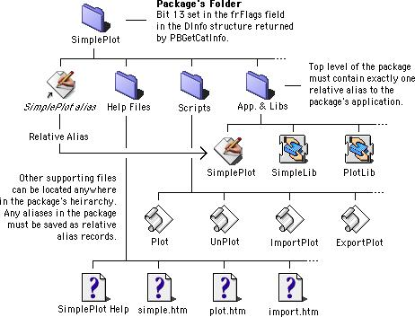

Overview
Packages in Mac OS 9 are not complex. Simply said, a Package in Mac OS 9 is a folder with the 'package bit' set that contains exactly one alias file at the topmost level. Normally, a package will consist of an application and a number of support files organized into sub-directories. There is only one requirement governing the internal organization of packages, and there are no restrictions on how package sub-directories can be named, how package sub-directories must be organized, or what package sub-directories must contain. Figure 1 provides an illustration of a hypothetical package named SimplePlot.

Figure 1. Sample package directory layout.
Although requirements for packages in Mac OS 9 are few, figure 1 illustrates the two main requirements for packages: the appropriate Finder flag must be set for the package's folder and exactly one relative alias must be present in the top level of the package's directory hierarchy.
The Package Flag
The folder containing the package has bit 13 (for files, the hasBundle bit)
set in its Finder flags. For files, this bit is known as the
'bundle bit' indicating that the file contains a
'BNDL' resource that is used by the Finder to determine
how the file's icon is displayed. For more information
about how the Finder 'BNDL' resources see the
Finder Interface
chapter of
Inside Macintosh: Macintosh Toolbox Essentials
.
In Mac OS 9, any folder having this bit set is recognized as a package. If this bit is set, and the folder contains exactly one alias at it's top most level, then the Finder will treat the folder as a package.
In some circumstances, due to a software problem or a crash, a folder may wind up having the package bit set when infact it is not a package. In this case, the Finder will treat such a folder as a 'damaged package' and its icon will appear as a blank document with the kind string set to 'package'. To correct this problem, there is a utility called "Package First Aid" provided on the Mac OS 9 install CD.
The Top Level Alias File
The package's folder contains exactly one alias file at its topmost level. This alias points to some other file in the package's directory hierarchy; and, it should be a relative alias so that it will remain valid if a package is copied to another volume. In this discussion, the file pointed to by that alias is called the 'package's main file'.
|
COMPATIBILITY NOTE Although the top level alias file refers to an 'application' in the example shown in Figure 1, there is no requirement that the main file in a package must be an application. It is possible to create many types of packages including document packages, library packages, et cetera. However, the primary focus for Mac OS 9 is application packages. |
The package's main file governs the behavior of the package in the Finder's windows. For all intents and purposes, the Finder treats the package as if it were a file containing the 'BNDL', 'FREF', icon resources, et cetera found in the package's main file.
For example, when a file is dragged over a package's icon, the Finder
will track the drag command exactly as if the file was being dragged over
the package's main file. Referring to Figure 1, say the application SimplePlot's
'BNDL' resource indicated it was capable of opening files of type
'PLOT', then:
- The Finder will allow the user to drop files of type
'PLOT'into the SimplePlot package and the package's icon will be hilited appropriately during drag operations, - If a user drops a file of type
'PLOT'into the SimplePlot package, the Finder will Launch the SimplePlot application, if it is not already running, and send an 'open documents' Apple event to the application asking it to open the file.
There are two ways to create the relative alias file required for a package. The first is to manually create an alias file in the Finder using the "Make Alias" command. The second, is to make the appropriate calls to the resource manager Alias Manager in software as shown in Listing 1.
/* MakeRelativeAliasFile creates a new alias file located at
aliasDest referring to the targetFile. relative path
information is stored in the new file. */
OSErr MakeRelativeAliasFile(FSSpec *targetFile, FSSpec *aliasDest) {
FInfo fndrInfo;
AliasHandle theAlias;
Boolean fileCreated;
short rsrc;
OSErr err;
/* set up locals */
theAlias = NULL;
fileCreated = false;
rsrc = -1;
/* set up our the alias' file information */
err = FSpGetFInfo(targetFile, &fndrInfo);
if (err != noErr) goto bail;
if (fndrInfo.fdType == 'APPL')
fndrInfo.fdType = kApplicationAliasType;
fndrInfo.fdFlags = kIsAlias; /* implicitly clear the inited bit */
/* create the new file */
FSpCreateResFile(aliasDest, 'TEMP', 'TEMP', smSystemScript);
if ((err = ResError()) != noErr) goto bail;
fileCreated = true;
/* set the file information or the new file */
err = FSpSetFInfo(aliasDest, &fndrInfo);
if (err != noErr) goto bail;
/* create the alias record, relative to the new alias file */
err = NewAlias(aliasDest, targetFile, &theAlias);
if (err != noErr) goto bail;
/* save the resource */
rsrc = FSpOpenResFile(aliasDest, fsRdWrPerm);
if (rsrc == -1) { err = ResError(); goto bail; }
UseResFile(rsrc);
AddResource((Handle) theAlias, rAliasType, 0, aliasDest->name);
if ((err = ResError()) != noErr) goto bail;
theAlias = NULL;
CloseResFile(rsrc);
rsrc = -1;
if ((err = ResError()) != noErr) goto bail;
/* done */
return noErr;
bail:
if (rsrc != -1) CloseResFile(rsrc);
if (fileCreated) FSpDelete(aliasDest);
if (theAlias != NULL) DisposeHandle((Handle) theAlias);
return err;
}
|
Listing 1. Sample routine for creating a relative alias file.
Developers interested in creating an application for automating the creation
of packages will want to employ some method similar to the routine shown
in Figure 1. Other options include using the Finder's 'Make Alias' command
or creating aliases using applescript. The advantage of calling NewAlias
directly is that you have more control over how the alias is created and are able
to specify which file is used for constructing relative aliases.
|
COMPATIBILITY NOTE When creating aliases using either the Finder's "Make Alias" command, or the method shown in Figure 1, be sure that File Sharing is turned off. If file sharing is turned on, then full path information such as the server name, etc is stored in the alias making it unsuitable for use in packages. Be sure file sharing is turned off before creating any aliases used in packages. |
The Package's Main File
In the context of the Finder's windows, a package will behave as if it were a file or an application. And, all of the properties of the package's icon are determined by the package's main file. As shown in figure 2, this is the file referred to by the package's top level alias file.

Figure 2. The package's main file.
For example, if the package's main file is an application, then the package will look and feel like an application; and, if the package's main file is a document, then the package will look and feel like a document. The package's main file is used by the Finder to determine the majority of the external characteristics of the package. These characteristics include:
- The package's icon,
- The package's kind (application, document, et cetera),
- The Get Info data (Excluding the package's size: a package's size
is the total of the sizes of all of the package's contents. Also, the
package's size is displayed in the Get Info window without reference
to the number of items in the package's folder.),
- Drag and drop information,
- The kIsStationery and kHasCustomIcon Finder flags from package's main
file are used when displaying the package. The other Finder flags, specifically
the invisible, name locked, inited, bundle, and color flags, are taken from
the package folder's flags instead of the main file's flags.
In general, a package will have all the same properties as the package's main file. Points where they differ include:
- The package's size is the total size of package folder contents,
- The main file's name and the package's name may differ. This allows
the user to edit the name of the package without disturbing the name of the
package's main file.
Application packages (package's whose main file is an application) accept drag and drop operations in Finder windows in the same way application files accept drag and drop operations in Finder windows. Here, the acceptance of a drag and drop is governed by the properties of the package's main file, and if a drop is allowed, then the Finder will send the appropriate Apple event to the package's main file.
Other Support Files
One of the key features of packages is the developer's ability to consolidate many support files together with the main application. By taking advantage of this facility, developers can group the files used in a product in a way that both simplifies the user's task of dealing with the product in the Finder's windows and prevents tampering with the arrangement of the support files used in the product.
|
COMPATIBILITY NOTE Developers currently placing support files for their applications in the system folder should consider consolidating their applications and support files into packages for Mac OS 9. |
A package may contain a complex hierarchy of support files, shared libraries, and other types of files used by the application in it's operation. Also, it is not unreasonable to suppose that a package may contain one or more application files that in some way lend to the overall facility provided by the package. In Figure 1, the package contains a number of support files including private shared libraries presumably used by the main application, a number of AppleScript scripts, and a suite of help files.
The Optional Open Document Event Parameter
Application packages may receive a open document 'odoc' Apple events
containing an optional parameter with the key 'fdpl' (Finder
package document list). This will be sent to the package when the Finder
is asked to open any file inside of a package. There are a few ways this
can happen:
- While running under a previous version of Mac OS, the user
created an alias referring to an item inside of the package's
folder and put the alias somewhere outside of the package's
folder. Then, after switching to Mac OS 9, they attempted to
open the item by double clicking on the alias.
- An open document event targeting one or more items inside of the
package's folder was sent to the Finder by some other application.
- An alias to an item inside of a package is dropped onto another
application. In this case, rather than launching the application that
the alias was dropped into, the Finder will launch the package's
application and send it an open document event containing a
'fdpl'parameter referring to the file.
In either case, the Finder will not open the items in the way that it
usually does. Instead, the Finder will package the items into an open
document apple event in a 'fpdl' parameter and send the event to the
package's application. The structure of the 'fpdl' parameter is identical
to the structure of the keyDirectObject open document event parameter -
it is a list of file aliases. The only difference is, the aliases will all
refer to files or folders inside of the application's directory.
Your open document event handler should be designed to handle each of the three different combinations of event parameters it can receive:
- Open document events without the optional
'fpdl'parameter. - Open document events where the
keyDirectObjectis an empty list referring to no documents, but the optional'fpdl'parameter contains a list referring to one or more documents. - Open document events where the
keyDirectObjectcontains a list referring to one or more documents and the optional'fpdl'parameter contains a list referring to one or more documents.
In general, the main application's open document event handler should
always look for the optional 'fpdl' parameter and take appropriate
actions when it is there. At the very least, the application should
provide appropriate feedback to the user indicating that the requested file
is an internal part of the package and cannot be opened. Other situations
may call for different kinds of processing; for example, say the 'fpdl'
parameter contains a reference to a help file inside of the package, then it
would be appropriate for the application to open that help file and display
its contents.
Package Compatibility Notes
Packages cannot be shared in Mac OS 9.
The StandardFile dialogs are not aware of packages. As a result, it is possible for users to use these windows to navigate into package folders and either attempt to open documents inside of them or save documents inside of packages. Navigation Services has been updated to recognize packages and it does not allow users to navigate into them (unless specifically directed to do so).